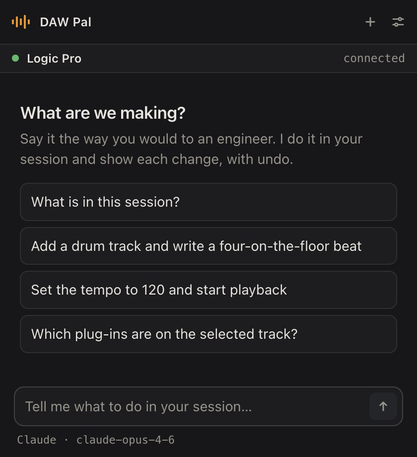

Tell your DAW what to do, in your own words.
DAW Pal is a small panel that floats on top of your session. Type “add a drum track and write a four-on-the-floor beat” and it does it — in Ableton Live, Logic Pro, LUNA or REAPER, with the AI model you already use.
Free while in beta. Mac with Intel or Apple silicon, Windows 10 and 11.

Set up in three steps
Install DAW Pal
One download. It lives in your menu bar and opens with a keyboard shortcut, or in its own window from your browser.
Pick your DAW
DAW Pal puts its add-on into Ableton Live or REAPER for you. Logic Pro and LUNA need nothing extra.
Pick your model
Paste a key for Claude, OpenAI or OpenRouter, or point it at a model running on your own computer with Ollama or LM Studio.
Things you can ask
- What is in this session?
- Add a drum track and write a four-on-the-floor beat
- Set the tempo to 120 and start playback
- Which plug-ins are on the selected track?
Every change shows up in the panel as it happens, with undo. Anything that deletes or exports asks you first.
Works with
| DAW | Runs on | What DAW Pal installs |
|---|---|---|
| Ableton Live | Mac, Windows | A control surface script |
| REAPER | Mac, Windows | An extension |
| Logic Pro | Mac | Nothing |
| LUNA | Mac | Nothing |
The optional DAW Pal Effect and Instrument plug-ins (VST3 and AU) let it open and adjust your third-party plug-ins too.
Your keys and your music stay with you
DAW Pal runs on your computer. API keys are kept in your system keychain and sent only to the model provider you chose. With a local model, nothing leaves your machine.